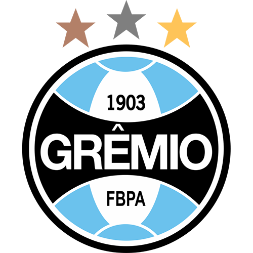
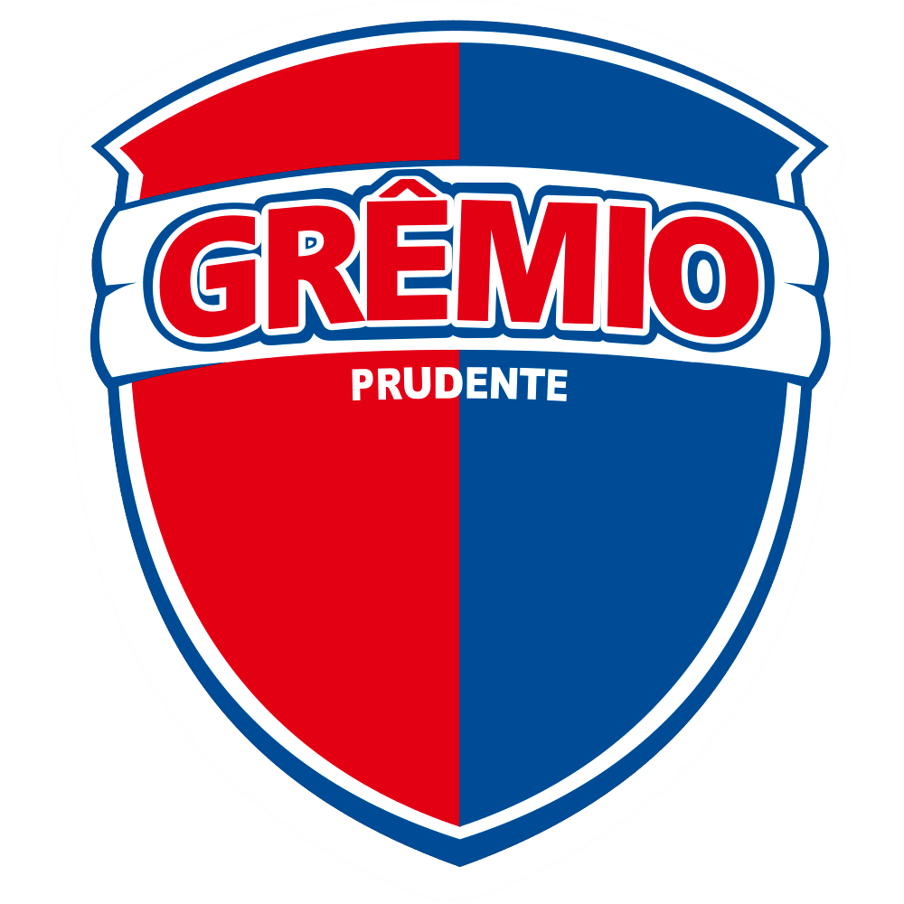

TAÇA LIBERTADORES PRÉ-LIBERTADORES SUL-AMERICANA REBAIXADOS
P pontos Jjogos E empates D derrotas GP gols pró GC gols contra SG saldo de gols (%) aproveitamento
| P | J | V | E | D | GP | GC | SG | % | |||
|---|---|---|---|---|---|---|---|---|---|---|---|
| 1 | | Corinthians | 17 | 7 | 5 | 2 | 0 | 15 | 8 | 7 | 81 |
| 2 | | Ceará | 17 | 7 | 5 | 2 | 0 | 7 | 1 | 6 | 81 |
| 3 | | Fluminense | 15 | 7 | 5 | 0 | 2 | 11 | 5 | 6 | 71.4 |
| 4 | | Santos | 12 | 7 | 3 | 3 | 1 | 15 | 10 | 5 | 57.1 |
| 5 | | São Paulo | 11 | 7 | 3 | 2 | 2 | 9 | 6 | 3 | 52.4 |
| 6 | | Goiás | 10 | 7 | 3 | 1 | 3 | 9 | 10 | -1 | 47.6 |
| 7 | | Botafogo | 9 | 7 | 2 | 3 | 2 | 13 | 11 | 2 | 42.9 |
| 8 | | Flamengo | 9 | 7 | 2 | 3 | 2 | 9 | 8 | 1 | 42.9 |
| 9 | Cruzeiro | 9 | 6 | 2 | 3 | 1 | 7 | 6 | 1 | 50 | |
| 10 | Guarani | 9 | 6 | 2 | 3 | 1 | 7 | 7 | 0 | 50 | |
| 11 | Palmeiras | 8 | 6 | 2 | 2 | 2 | 5 | 4 | 1 | 44.4 | |
| 12 |  | Grêmio | 8 | 7 | 2 | 2 | 3 | 10 | 11 | -1 | 38.1 |
| 13 | | Avaí | 8 | 7 | 2 | 2 | 3 | 10 | 11 | -1 | 38.1 |
| 14 | | Vitória | 8 | 7 | 2 | 2 | 3 | 7 | 8 | -1 | 38.1 |
| 15 |  | Prudente | 8 | 6 | 2 | 2 | 2 | 9 | 11 | -2 | 44.4 |
| 16 | | Atlético-PR | 7 | 7 | 2 | 1 | 4 | 10 | 15 | -5 | 33.3 |
| 17 | | Internacional | 6 | 6 | 2 | 0 | 4 | 10 | 12 | -2 | 33.3 |
| 18 | | Atlético-MG | 6 | 7 | 2 | 0 | 5 | 10 | 16 | -6 | 28.6 |
| 19 | | Vasco | 5 | 7 | 1 | 2 | 4 | 5 | 12 | -7 | 23.8 |
| 20 | | Atlético-GO | 1 | 6 | 0 | 1 | 5 | 3 | 9 | -6 | 5.6 |
|
TAÇA LIBERTADORES PRÉ-LIBERTADORES SUL-AMERICANA REBAIXADOS P pontos Jjogos E empates D derrotas GP gols pró GC gols contra SG saldo de gols (%) aproveitamento |
|||||||||||